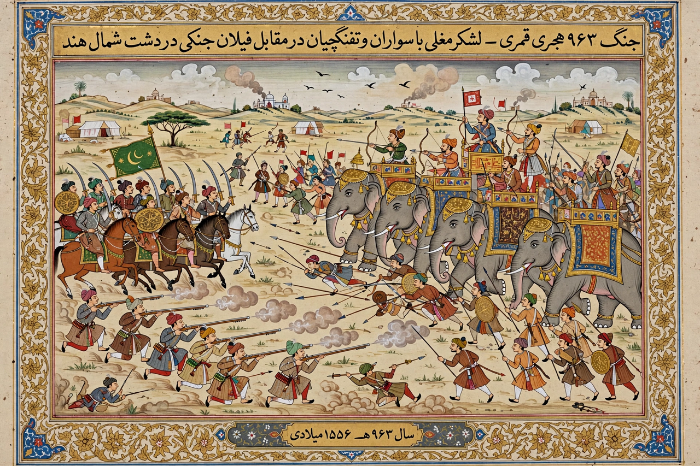

| Second Battle of Panipat | |
|---|---|
 | |
| Date | 5 November 1556 |
| Location | Panipat (in present-day Haryana, India) |
| Result | Decisive Mughal victory |
| Belligerents | Mughal Empire vs. forces of Hemu |
| Commanders | Bairam Khan, Ali Quli Khan vs. Hemu † (executed after capture) |
The Second Battle of Panipat was fought on 5 November 1556 between the Mughal army, commanded by the regent Bairam Khan on behalf of the young emperor Akbar, and the much larger army of Hemu, the Hindu general and minister of the Suri dynasty who had proclaimed himself ruler of Delhi. The Mughal victory re-established Mughal rule in northern India.
Humayun's death in January 1556 left the restored Mughal Empire to the thirteen-year-old Akbar. Hemu, a brilliant commander who had won a string of victories for the Sur Afghans, seized Agra and Delhi in October 1556, defeating the Mughal commander Tardi Beg, and assumed the title Vikramaditya. Bairam Khan marched the imperial army to Panipat, the historic battlefield where Babur had won the First Battle of Panipat thirty years earlier.
Hemu's force, spearheaded by some 1,500 war elephants, initially drove back both Mughal wings, and the day appeared lost. At the height of the fighting an arrow struck Hemu in the eye as he led from atop his elephant Hawai; his army, seeing its leader fall, broke and fled. Hemu was captured unconscious and brought before Akbar and Bairam Khan; according to court histories, Bairam Khan had the young emperor touch Hemu with his sword before executing him himself.
Delhi and Agra were occupied without further resistance, and surviving Suri resistance under Sikandar Shah Suri was extinguished the following year. The battle is considered the true foundation of Akbar's empire, which he would rule for nearly fifty years.